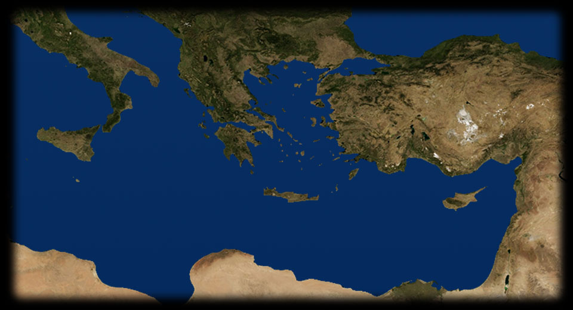
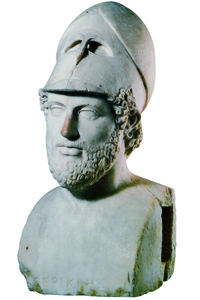
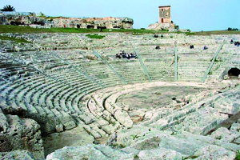

- 200 410
- 220 140
- 180 480
- 200 380
- 115 530
- 
ATENE
Il celebre ritratto di Pericle, l’uomo-simbolo dell’età d’oro della democrazia ateniese, copia romana di un’opera dello scultore Kresilas. Dal 460 al 430 a.C. Pericle domina la scena politica ateniese, conducendo una politica estremamente democratica; inoltre intraprende grandiose opere pubbliche come la costruzione del Partenone. La sua politica estera mirava a espandere l’impero ateniese. - 
SIRACUSA
Il teatro greco di Siracusa, uno dei più splendidi monumenti della Magna Grecia, è ancora oggi perfettamente adatto ad ospitare spettacoli di alto livello, grazie alla sua architettura monumentale e all’acustica perfetta. Atene interviene in Sicilia per aiutare Segesta, sua alleata, in un conflitto con Siracusa, alleata di Sparta. La spedizione si risolve in una catastrofe e segnerà l’inizio del declino di Atene. DELO
Nel 477 a.C. viene fondata la lega delio-attica, una confederazione marittima a scopo difensivo. Il tesoro della lega, prima custodito a Delo, viene spostato ad Atene quando il controllo ateniese sulle città alleate è ormai diventato un’egemonia incontrastata.ATTICA
Nella prima fase della guerra del Peloponneso l’esercito spartano invade l’Attica e stringe sotto assedio Atene, che viene anche colpita duramente da un’epidemia di peste. Questa fase si conclude con una tregua (pace di Nicia), durata solo tre anni.EGOSPOTAMI
Presso la foce del fiume Egospotami, nei Dardanelli, ha luogo nel 405 a.C. la sconfitta definitiva della flotta ateniese. Dopo la fine della guerra ad Atene sono imposte pesanti condizioni che sanciscono la fine della sua supremazia.